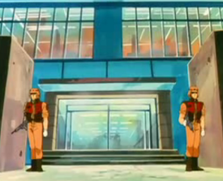
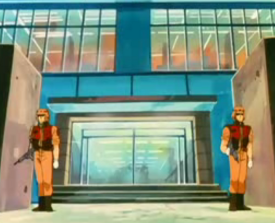

New Mycenae & New Sparta New Mycenae & New Sparta
Side 6 Bunch 1, Republic of Riah Headquarters Mirrored Colony Cluster The capital of Side 6, Riah does the same as Side 1 and Side 3 by having the most important military colony orbit the most important political colony. New Mycenae houses the Riah Republics senate and political system, while New Sparta houses their military apparatus. Riahs military is small compared to the Federation and the Duchies, but it is more than enough to stave off small assaults, having been repeatedly strengthened over the course of the war. New Mycenae and New Sparta   
|